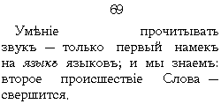
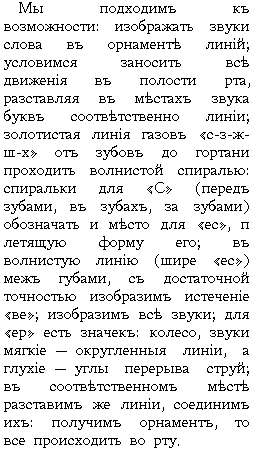
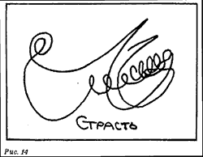
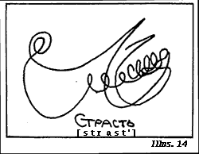
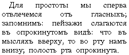
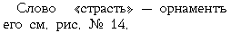
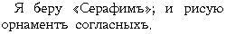
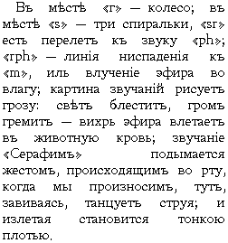
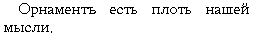
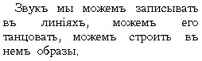

Glossolalia (Section 69)
GLOSSOLALIA

The mental ability to read sound is -- only the first hint at the lingua languarum; and we know: the second coming of the Word -- will be consummated.

We are approaching the possibility: to depict sounds of a word in a design of lines; we will tentatively agree to drag out all the movements in the cavity of the mouth, arranging in the places for the sound of the letters corresponding lines; a goldenish line of gases "s-z-zh-sh-kh" proceeds in a wavy spiral from the teeth to the larynx; the tiny spirals for "S" (in front of the teeth, on the teeth, beyond the teeth) will signify the place for "s," and its flying form; on the wavy line (a wider "s") between the lips, with sufficient precision we will depict the outflow of "v"; we will depict all sounds; for "r" there is a sign: a wheel; the soft sounds are -- circular lines, and the unvoiced ones are -- angles interrupting the streams; at the corresponding place we will arrange the lines, unite them: we'll end up with a design, all that happens in the mouth.



For simplicity we first will turn our attention away from the vowels; let us remember: paysages are composed in an inverted view; that which in our thoughts is on the top, in the mouth that is on the bottom; the cavity of the mouth is inverted.

The design of the Russian word for "passion" [strast'] is in diagram 14.

I take "Seraphim"; and draw the design of the consonants.

In the place of "r" is -- a wheel; in the place of "s" -- three tiny spirals; "sr" is a flight over to the sound "ph"; "rph" is -- a line of descent to "m," or of the ether radiating into the moisture; the picture of sounds depicts a thunderstorm: the light shines, the thunder roars -- a whirlwind of the ether flies into animal blood; the sound "Seraphim" rises up in a gesture, proceeding in the mouth, when we pronounce it, here, the stream, winding about, dances and as it flies out it becomes delicate flesh.

A design is the flesh of our thought.

We can draw out a sound in lines, we can dance it, in it we can construct images.